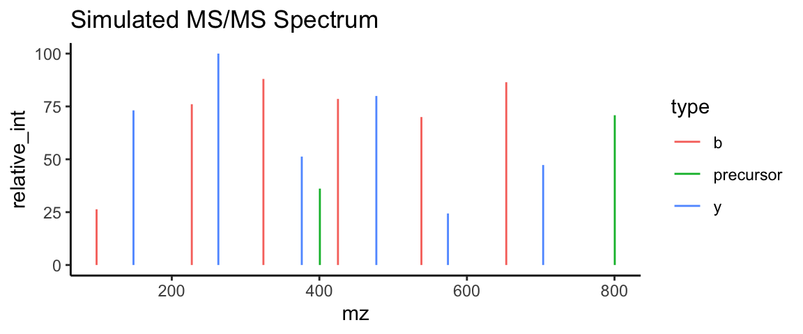

Chapter 2 Installation
In the scope of this book, there are three main components that need to be installed, and periodically updated:
The R interpreter - the software that understands math and plotting
RStudio IDE - the software that makes it easy write code and visualize data
R Packages - bits of R code that perform specalized operations
In this book we will be utilizing the RStudio integrated development environment (IDE) to interact with R. Two separate components are required for this - the R interpreter and the RStudio IDE. Both are required as the RStudio IDE only provides an interface for the R interpreter, which reads the code and does all the mathematical operations. The R interpreter can be used alone, interacting through the command line (eg. Windows CMD, MacOS and Linux Terminal), a plain text editor or another IDE such as Xcode, VSCode, Eclipse, Notepad++, etc. Rstudio provides a comprehensive, R specific environment, with auto-complete, code syntax highlighting, in-editor function definitions along with package management and plot visualizations.
 |
At the end of this chapter you should be able to
|
2.1 R interpreter
The underlying “engine” for R programming language can be downloaded from The R Project for Statistical Computing. R is an open-source implementation of the S statistical computing language originally developed at Bell Laboratories. Both langauges contain a variety of statistical and graphical techniques, however, R has been continually extended by professional, academic and amateur contributors and remains the most active today. With the advent of open-source sharing platforms such as GitHub, R has become increasingly popular among data scientists because of its ease of use and flexibility in handling complex analyses on large datasets. Additionally, one of R’s strengths is the ease with which well-designed publication-quality plots can be produced.
Steps
- Navigate to The R Project
- Click on CRAN under Download, left-hand side
- Click on https://cloud.r-project.org/ under 0-Cloud
This will take you to the globally nearest up-to-date repository - Click on
Download for ...and choose the OS compatible with your device
Windows OS
- Click on
baseBinaries for base distribution. This is what you want … - Click on “Download R-4.x.x for Windows” This prompt you to save R-4.x.x-win.exe file
- Locate and Double Click on the R-4.x.x-win.exe file.
- In the popup select your language
Figure 2.1: Windows10 R Installer
- Click “OK”
- Click “Next” 3 times, accept defaults for Startup options
- Click “Next” 3 more times
- Install should be complete
Figure 2.2: Windows10 R Installer

2.2 R Studio IDE
RStudio, prior to 2023, was an independent software provider for the ever-popular RStudio products, which included both the desktop and server based IDEs, along with the RShiny applications and servers that facilitate easy-to-build interactive web applications straight from R, and deployed on the web. The last chapter in this book will explore the tidyproteomics package which also has a Shiny web application. RStudio announced at the beginning of 2023 a soft pivot to Posit, which essentially is a rebranding of the RStudio company to encompass a larger data science audience, one that also provides integration with the Python programming language inside the RStudio IDE.
The most trusted IDE for open source data science
“RStudio is an integrated development environment (IDE) for R and Python. It includes a console, syntax-highlighting editor that supports direct code execution, and tools for plotting, history, debugging, and workspace management. RStudio is available in open source and commercial editions and runs on the desktop (Windows, Mac, and Linux).”
— www.posit.co (Jan 2023)
Steps
- Navigate to posit.co, alternatively rstudio.com redirects to the Posit website.
- Click
Download RStudioin the menu top right - Select
RStudio Desktop - Click
Download RStudio
skip 1: Install R - Click
Download RStudio Desktop for ..

IDE Layout
The RStudio Integrated Development Environment (IDE) is a powerful tool that can make your data analysis and coding tasks more manageable. One of the key features of the RStudio IDE is that it consists of four individual panes, each containing parts of the total environment. This makes it easier for you to navigate your coding and analysis tasks.
For example, while creating and viewing a plot, you can have the text editor and console open and organized. This way, you can easily see how the code you are writing is impacting the plot you are creating. Having everything in one place can also help reduce the clutter on your desktop, as you don’t need to have multiple applications open at the same time.
Overall, the RStudio IDE is an excellent option for anyone looking to streamline their coding and data analysis workflows. By taking advantage of its various features, you can make your work more efficient and enjoyable.
Figure 2.6: RStudio IDE in the default layout
The Editor
Tabs:
All Open Files
The Editor is a tool that allows you to write R code with ease. It is essentially a text editor, but with the added benefit of having knowledge of R. This means that it can automatically color different parts of your code based on their function. This can be a huge time saver, as it makes it easier to read and understand your code.
For example, comments in R code start with a hash (#) symbol. In the Editor, these comments are colored light green, making them easy to spot. Similarly, operators like the plus sign (+) and the assignment operator (<-) are colored light blue. This makes it easy to identify where these operators are being used in your code.
Variables are an important part of any programming language, and R is no exception. In the Editor, variables are colored black. This makes it easy to distinguish variable names from other parts of your code. Finally, quoted text (also known as strings) are colored purple. This makes it easy to identify where strings are being used in your code.
In summary, the Editor is a powerful tool that can help you write R code more efficiently. By automatically coloring different parts of your code, it makes it easier to read and understand. Whether you are a beginner or an experienced R programmer, the Editor can help you write better code in less time.

Figure 2.7: RStudio IDE syntax highlighting
The Editor also has the ability to suggest available variables and functions. In the image provided, the editor suggests using the mean() function to calculate the average of a collection of values. A pop-up with a description accompanies the suggestion. This feature occurs after typing in the first three letters of anything, and the editor will try to guess what you want to type next. This is a helpful tool that can save you time and effort when writing R code.
Figure 2.8: RStudio IDE auto complete
Files and Plots
Tabs:
Files,Plots,Packages,Viewer, andPresentation
When you’re working in RStudio, your workflow is made simple with the various tabs and features available. For instance, the script that you’re currently working on is saved to the current project and can be accessed via the Files tab located on the top right-hand side of the pane. This tab provides an overview of all the files in the working directory, and you can easily navigate between them.
If you need to open another file, you can do so by clicking on the File menu or by using the shortcut key. When you open a new file, it will create a new tab in the Editor pane, which allows you to switch between open files. This feature is super helpful when you’re working on multiple files simultaneously.
Another useful tab located in the same pane is the Plots tab. This tab provides a quick way to view any active plots instantly. You don’t need to export your plots or save them separately. Instead, you can view them right within RStudio. This is where RStudio truly shines, as it brings together editing and visualization in one application.

Figure 2.9: RStudio IDE plot window
The Console
Tabs:
Console,Terminal, andBackground Jobs
In the RStudio IDE, the Console pane is where lines of code are executed from the editor. It is a vital component of the RStudio interface that allows users to interact with R in real-time. The Console pane is not only where code is run, but it is also where users can view output and error messages. Additionally, the Console pane provides users access to the computer’s terminal. This feature allows users to execute commands outside of the R environment, such as navigating files and directories or installing packages. Overall, the Console pane is an essential tool for any RStudio user and should be utilized to its full potential.
Environment
Tabs:
Environment,History,Connections, andTutorial
When you’re working on a project in R, it’s essential to keep track of the variables and functions that you’re using in your current session. The Environment tab, located at the top left of the RStudio interface, provides a concise summary of in-memory variables and functions that were created locally, as opposed to functions that were loaded from a package.
This summary can be useful for new-comers to R because it allows you to quickly see what objects you are currently working with, without having to remember each or manually check. By having a clear overview of your current session, you can avoid mistakes or errors that might arise from using the wrong object or function.
Overall, the Environment tab is a helpful feature of RStudio that can save you time and frustration. If you’re new to R or just starting to use RStudio, make sure to keep an eye on the Environment tab and make use of its features as often as possible. As you become more versed in RStudio this tab may become less relevant.

Figure 2.10: RStudio IDE environment window
Usage
Run from the editor (recommended)
- Type in the code in the Editor (top-left pane)
- Put editor cursor anywhere on that line
- Press Ctrl/CMD+Enter.
- Multiple lines: highlight multiple lines then press Ctrl/CMD+Enter #### Run from the onsole (occasionally)
- Type code into Console (bottom-left) after the ‘>’
- Press Enter.
- Multiple lines, not advised, but copy and paste multiple lines into console then press Enter.
2.3 R Packages
R packages are a powerful tool in the R programming language that allow you to easily use code written by others in your own projects. They can save a lot of time and effort in the development of your own code, as they often provide new functions to deal with specific problems. For example, the popular ggplot2 package provides a variety of functions to help you create beautiful visualizations, while the mzR package allows you to read mass spectrometry data files with ease. Additionally, the twitteR package is a great tool for accessing Twitter data and conducting analysis.
2.3.1 Exploring
It’s worth noting that packages can be written by anyone, which means that their quality can vary widely. While there are many high-quality packages available, it’s important to be wary of randomly coming across packages on the internet. To ensure that you’re working with trustworthy code, it’s a good idea to stick with well-established and frequently updated packages from reputable sources such as the CRAN (The Comprehensive R Archive Network) and Bioconductor repositories. By doing so, you can ensure that your code is reliable, efficient, and secure.
- CRAN cran.r-project.org
- Bioconductor bioconductor.org
- GitHub github.com
In addition to using established packages, it’s also possible to create your own packages in R. This is a great way to share your own code with others and make it accessible to a wider audience. When creating a package, it’s important to follow a set of best practices to ensure that your code is well-documented, easy to use, and compatible with other packages. This includes providing clear and concise documentation, including examples and tutorials, and following established coding conventions.
Another important consideration when working with R packages is version control. It’s essential to keep track of the versions of the packages you’re using, as updates can sometimes break existing code. By using a tool like Git or GitHub, you can easily manage different versions of your code and keep track of changes over time. This can be especially useful when collaborating with others on a project.
Overall, R packages are an essential tool for anyone working with R. By using established packages and following best practices when creating your own, you can ensure that your code is efficient, reliable, and easy to use. And by using version control, you can keep track of changes over time and collaborate effectively with others.
2.3.2 Installing
When working with R, it is important to understand how to install packages. R packages are collections of functions, data, and documentation that extend the capabilities of R. Most R packages have binary versions available for direct installation with no additional steps required. Binary packages are pre-compiled and ready-to-use packages that are platform-specific. They can be installed with the install.packages() function in R.
 |
Follow the examples below to install all the required packages used in this book. Jump to the following section if you run into any issues. Use the copy-paste button in the top-right of each code block. |
GitHub
# do this once to install the devtools package
install.packages("devtools")
# this installs the tidyproteomics package
install_github("jeffsocal/tidyproteomics")
|
There maybe several additional packages to install including additional operating system level installs. Go to the tidyproteomics webpage for additional installation help. |
Gotchas
However, there are cases where a binary version of a package may not be available. This could be because the package is new or has just been updated. In such cases, the package may need to be compiled before it can be installed. Compiling a package involves converting the source code into machine-readable code that can be executed.
To compile R packages, you’ll need to have the necessary programs and libraries installed on your computer. For Windows, you’ll need to install RTools, which provides the necessary tools for package compilation. For Mac, you’ll need to install Command Line Tools. Once these tools are installed, you can use them to compile packages that are not available as binaries.
However, it’s worth noting that package compilation can sometimes fail for various reasons. This can be frustrating, especially if you’re new to R. Therefore, it is generally recommended to stick with using binary packages whenever possible. Binary packages are more stable and easier to install, making them the preferred option for most users.
In summary, when working with R, it’s important to understand how to install packages. Most packages have binary versions available for direct installation, but there may be cases where you need to compile a package yourself. While package compilation can be useful in some cases, it can also be frustrating and time-consuming. Therefore, it’s generally recommended to stick with using binary packages whenever possible.
2.4 For this Book
tidyverse
The Tidyverse R package is a collection of data manipulation and visualization packages for the R programming language. It includes popular packages such as dplyr, ggplot2, and tidyr, among others. The Tidyverse R package is a powerful and versatile tool for data analysis in R. It includes a collection of data manipulation and visualization packages designed to work seamlessly together, making it easy to analyze and visualize data in R. This package is cover in more detail in 6 Tidyverse, and 8.2 GGplot2.
## ── Attaching core tidyverse packages ─────────────────────────────────────────────────────────────────── tidyverse 2.0.0 ──
## ✔ dplyr 1.1.4 ✔ readr 2.1.5
## ✔ forcats 1.0.0 ✔ stringr 1.5.1
## ✔ ggplot2 3.5.1 ✔ tibble 3.2.1
## ✔ lubridate 1.9.3 ✔ tidyr 1.3.1
## ✔ purrr 1.0.2
## ── Conflicts ───────────────────────────────────────────────────────────────────────────────────── tidyverse_conflicts() ──
## ✖ dplyr::filter() masks stats::filter()
## ✖ dplyr::lag() masks stats::lag()
## ℹ Use the conflicted package (<http://conflicted.r-lib.org/>) to force all conflicts to become errorsThe readr package provides a versatile means of reading data from various formats, such as comma-separated (CSV) and tab-separated (TSV) delimitated flat files. In addition to its versatility, the readr package is also known for its speed and efficiency. It is designed to be faster than the base R functions for reading in data, making it an ideal choice for working with large datasets.
## Rows: 14 Columns: 7
## ── Column specification ───────────────────────────────────────────────────────────────────────────────────────────────────
## Delimiter: ","
## chr (4): ion, seq, pair, type
## dbl (3): mz, z, pos
##
## ℹ Use `spec()` to retrieve the full column specification for this data.
## ℹ Specify the column types or set `show_col_types = FALSE` to quiet this message.The tibble package embodies a modern, flexible take on the data table, making it a powerful tool for data analysis in R. This package includes a suite of functions that allow you to easily manipulate and reshape data. It also has a printing method that makes it easy to view and explore data, even when dealing with large datasets. Additionally, tibble objects are designed to work seamlessly with other Tidyverse packages, such as dplyr and tidyr, making it easy to switch between packages and maintain a consistent syntax.
## # A tibble: 14 × 7
## ion mz z seq pair pos type
## <chr> <dbl> <dbl> <chr> <chr> <dbl> <chr>
## 1 b1+ 98.1 1 P p01 1 b
## 2 y1+ 148. 1 E p06 1 y
## 3 b2+ 227. 1 PE p02 2 b
## 4 y2+ 263. 1 DE p05 2 y
## 5 b3+ 324. 1 PEP p03 3 b
## 6 y3+ 376. 1 IDE p04 3 y
## 7 MH++ 401. 2 PEPTIDE p00 NA precursor
## 8 b4+ 425. 1 PEPT p04 4 b
## 9 y4+ 477. 1 TIDE p03 4 y
## 10 b5+ 538. 1 PEPTI p05 5 b
## 11 y5+ 574. 1 PTIDE p02 5 y
## 12 b6+ 653. 1 PEPTID p06 6 b
## 13 y6+ 703. 1 EPTIDE p01 6 y
## 14 MH+ 800. 1 PEPTIDE p00 NA precursorThe readxl package is a complement to readr providing a means to read Excel files, both legacy .xls and the current xml-based .xlsx. It is capable of reading many different types of data, including dates, times, and various numeric formats. The package also provides options for specifying sheet names, selecting specific columns and rows, and handling missing values.
The dplyr package is widely known and used among data scientists and analysts for its interface that allows for easy and efficient data manipulation in tibbles. Providing a set of “verbs” that are designed to solve common tasks in data transformations and summaries, such as filtering, arranging, and summarizing data, all designed to work seamlessly with other Tidyverse packages making it easy to switch between packages and maintain a consistent syntax. One of the key benefits of the dplyr package is its ease of use, making it perfect for beginners and advanced users alike. It is widely used in the R community and is a valuable tool for anyone working with R and data tables.
tbl %>%
filter(type != 'precursor') %>%
group_by(type) %>%
summarise(
num_ions = n(),
avg_mass = mean(mz)
)## # A tibble: 2 × 3
## type num_ions avg_mass
## <chr> <int> <dbl>
## 1 b 6 378.
## 2 y 6 424.The tidyr package contains a set of data table transformations, including pivotting rows to columns, splitting a single column into multiple ones, and tidying or cleaning up data tables for a more usable structure. These transformations are essential for dealing with real-world data tables, which are often messy and irregular. By using tidyr, you can quickly and easily manipulate data tables to extract the information you need and prepare them for further analysis.
## Warning: Specifying the `id_cols` argument by position was deprecated in tidyr 1.3.0.
## ℹ Please explicitly name `id_cols`, like `id_cols = z`.
## Call `lifecycle::last_lifecycle_warnings()` to see where this warning was generated.## # A tibble: 2 × 2
## z precursor
## <dbl> <dbl>
## 1 2 401.
## 2 1 800.The ggplot2 package stands out as the most advanced and comprehensive package for transforming tabulated data into meaningful and informative graphics. With its wide range of visualization tools, this package allows you to create expressive and compelling graphics that not only look great but also convey detailed information in a clear and concise manner. Apart from other visualization tools, ggplot2 takes a layered approach to creating graphics, allowing for the additive layering of additional data, labels, legends, and annotations, which helps to provide a more comprehensive view of your analysis.
tbl %>%
mutate(int = rnorm(n(), mean = 1e5, sd=5e4),
relative_int = int/max(int) * 100) %>%
ggplot(aes(mz, relative_int, color=type)) +
geom_segment(aes(xend = mz, yend = 0)) +
labs(title = "Simulated MS/MS Spectrum") +
theme_classic()
One of the key benefits of using the Tidyverse is the standardization of syntax and functions across each package. This means that once you learn the basics of one package, you can easily switch to another package and be confident in your ability to use it. This makes it easier to create reproducible code and improves the efficiency of your data analysis.
The Tidyverse is widely used in the R community and is a valuable tool for any data scientist or analyst working with R. It is especially useful for those who need to manipulate and visualize data quickly and efficiently, without sacrificing accuracy. Whether you are new to R or an experienced user, the Tidyverse is a must-have tool in your data analysis toolkit.
MS Packages
This book, while providing a beginners level guide to R programming, also introduces several mass spectrometry-specific packages in many of the code examples. While these examples may only touch on some of their functions, the last chapter is dedicated to a more formal, albeit not comprehensive introduction to many of these packages. For example the 10.4.3 mzR package, which enables users to read and process mass spectrometry data, as well as the 10.4.4 xcms package, which is used for preprocessing and feature detection. Additionally, the book introduces the 10.4.2 MSnbase package, which provides a framework for quantitative and qualitative analysis of mass spectrometry data, and the 10.5.1 MSstats package, which is used for statistical analysis of quantitative proteomics experiments. Lastly, the book covers the tidyproteomics package, which provides a collection of tools for analyzing post-analysis quantitative proteomics data using a framework similar to the tidyverse.